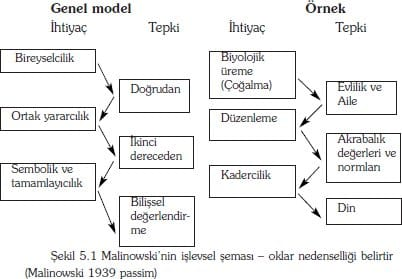

Bu bölüm, Ercan Şahbudak - Zafer Cirhinlioğlu tarafından çevrilmiştir.
Özellikle kendi bireyselciliğimizi öne sürerken, toplumu bir sistem olarak düşünmek, alışılagelmiş bir uygulamadır. Kimi zaman, bireyin "sisteme karşı durduğu"ndan ya da "sistem tarafından bastırıldığından" bahsederiz. Hatta "sisteme karşı" gelebilenleri takdir ederiz. Günlük konuşma içerisinde, genellikle pek açık olmamakla birlikte, sisteme ilişkin bu sözler iki tür anlama sahip olabilir. Birincisinde, toplumun, imtiyazlı ve imtiyazsız kısımlara ayrılmış olduğu düşünülür. 'Sistem', imtiyazlıların, kendi konumlarını koruma ve sürdürmek üzere yerleştirmiş oldukları bir dizi güç düzenlemesidir. Burada, baskı yapan sistem, özel bir sistemdir; muhtemelen, komünist , ataerkil, belki de kapitalist bir sistemdir. Üzerlerinde baskı uygulananlar ya da muhalif durumdakiler, toplumun imtiyazsız kesiminde bulunurlar, fakat, benzer durumdaki diğerleri ile ortak çıkarlara ve olası işbirliği imkanlarına sahiptirler. İkinci tür anlam sistemi, çok daha kapsayıcı bir varlık olarak ele alır; yani, sistem, her şeyin üstünde duran, imtiyaz düzeyleri ne olursa olsun, her bireye de karşı durabilen bir varlıktır.
Her bireyin, toplumun sınırlamalarına karşı yalnız bir savaş verdiği kabul edilir. İlginçtir ki, bu tür bir düşüncede, toplumun ya da sistemin, herhangi belirli bir birey ya da bireyler grubunun sorumluluğunda olmadığı kabul edilir. Bu durum, kara bir bulut gibi üzerimizi kaplamakta, düşüncelerimizi ve davranışlarımızı yönlendirmekte ve belirli bir özelliği olmadığından dolayı da başka bir şeyle değiştirilemektedir. O herhangi başka bir şey de, ancak yine başka bir sistem olacaktır. Bunun için, sistemin sınırlamalarına karşı bir direnç, genellikle isyan yerine (geri) çekilme şekline dönüşür.
Bu bölüm, ikinci görüşü kabul eden sistemlere ilişkin kuramları incelemektedir. Ayrıcalığın (privilege) yapısına işaret eden kuramlar, 9., 7., ve 4. bölümlerde ele alınmıştır. Rasyonel (rationalite) ve bireysel (agency) kuramlar olan sistem kuramlarının en etkin şekilde tanımladığı zıtlık (contrast), 2. ve 3. bölümlerde tartışılmıştır. Bireysel ve rasyonel kuramlar (agency and rationality theories), toplumu, bireylerin eylemlerinin bir sonucu olarak görmektedirler. Bireyler, bilinçli olarak toplumsal kurumları inşa etmektedirler, çünkü, ya bu kurumlar onların hayatlarına bir anlam vermekte ya da maddi çıkarlar elde etmelerine imkan sağlamaktadır. Bu kuramlar, ayrı ayrı indirgemecidirler (reductionalist), yani, bireysel aktörlerin zihinsel yatkınlıkları olarak, toplumsal yapıyı "makul göstermeye" çalışmaktadırlar. Sistem kuramları, toplumun bir bütün olarak varoluşunu araştırmazlar. Biyologların büyük çoğunluğunun, organik dünyanın gerçekliğini 'elde var olarak' (given) kabul etmeleri gibi, sosyologlar da, toplumsal dünyanın gerçekliğini ,'elde var olarak ' (given) kabul edebilirler.
Bu görüş, tartışılan sistem kuramlarının da kabul ettikleri gibi, bireysel indirgemecilerin, toplumsal dünyanın farklılığını, karmaşıklığını ve boyutunu açıklarlarken karşılaştıkları güçlükler ile, açıkça ortaya konmaktadır. "Büyük bir din, örneğin Hinduizm, sadece kendi çıkarlarının izlenmesini söylediği ya da anlam üretmeye yaradığı iddia edilerek gözden çıkarılamaz. Daha ziyade, insanlar, seçim yapmadan bir dinin içinde doğarlar ve sorgulamadan ona katılırlar. Bu onların oluşturduğu bir şey değildir, tersine, bu dinler insanların düşüncelerini ve hayatlarını düzenlemek için ortaya çıkmışlardır. Toplumsal kurumların sonuçlarıdır. Sistem kuramları sosyolojik olarak indirgemecidirler – aktörlerin psikolojik süreçlerini, toplumsal kurumlar içindeki yerlerinin bir sonucu olarak gördüklerinden dikkate alamazlar". Toplumun ya da sistemin, kendilerini oluşturan bireysel eylemlerin toplamından daha büyük olduğu kabul edilmektedir.
Toplumu tanımlamak için sistem teriminin kullanılması, "systemness/sistemlilik" düşüncesini de beraberinde getirir. Bunun anlamı, tüm sistemin unsurlarının belirleyici bir şekilde bir araya gelmesidir. Eğer toplumun bir kesiminde bir değişiklik olursa, bu durum ileride toplumun diğer kısımları için de değişmelerin meydana gelmesine etki edecektir. Bundan daha da önemlisi, bu durum, bir toplumu oluşturan üyelerin bağımsız amaç ve iradelerinin olduğu ve toplumun kendine özgü bir yönetimi ve mantığı olduğu anlamına gelmektedir. Aslında eleştirmenler, sistem kuramlarını sık sık, amaç ve iradeyi ya toplumun kendisine ya da onun toplumsal kurumların sonuçlarına bağlantılandırmakla suçlamaktadırlar.
Yönelimsel (directional) mantığın bu savının önemli bir kuramsal sonucu da, sistemin bir kısmının değişmesinin diğerlerinden bağımsız bir şekilde oluşamayacağıdır. Aslında, belirli bir toplumsal birim, sistemin mantığına meydan okuyacak olursa, çıktığı çizgiye yeniden oturtulacaktır. Bu demektir ki, toplumun kurucu öğelerinin almış oldukları yapı ve biçimler, bir bütün olarak sistem ile olan ilişkileri içerisinde açıklanabilir. Bu tür bir açıklama işlevselci açıklama olarak bilinmektedir– toplumsal birimlerin belirli bir biçimi ve özü, sistem içinde işlev görme şekli ve aynı zamanda sisteme ve sistemin mantığının gelişmesine yaptığı katkı ile açıklanır. Örneğin, kapitalist bir sanayi toplumunda aile yapısı çekirdek aile tipidir, çünkü, genel olarak kabul edildiği gibi, insanın işgücü ve yeteneğinin azami hareketine ancak böyle bir aile yapısı imkan vermektedir. Bundan dolayı, sistemin mantığını vurgulayan kuramlar, genellikle işlevselci kuramlar olarak adlandırılmaktadırlar. Bu bölümün çeşitli kısımlarında işlevsel açıklama modellerine değineceğiz.
Sistem kuramlarının ana niteliklerinin maddeler halindeki bir özeti aşağıdaki gibi düzenlenebilir.
1. Toplum kendi başına vardır ve bir araştırma konusudur. Toplumlar insanların, belirli bir seviyede, ustaca düşünen ve davranan özneler olacak şekilde düzenlenirken; sosyolojik bakış açısından, toplumsal kurumlar ve süreçlerin farkında olunmayan sonuçları olarak en iyi şekilde incelenirler.
2. Bireyler sistemle, bilinçlice oluşturulmuş bir yapı olarak değil, toplumsal bir gerçeklik olarak karşı karşıya gelirler. Toplum, kendisini bireylere toplumsal öğrenme (toplumsallaşma) ve toplumsal kontrol şeklinde kabul ettirir. Güdüler ve çıkarlar toplumsallaşma süreci içinde kavranılır.
3. Toplum, kapsamlı bir mantık ya da karakteri sadece kendisini oluşturan bireylere değil, ayrıca kendisini oluşturan toplumsal birimlere ya da alt sistemlere de kabul ettirir. Sistem, oto-yönlendirme kapasitesi varmış ya da tek bir yönetici ilke ile çalışıyormuş gibi incelenmelidir. Sistem, yönetici ilkeden sapan unsurları kontrol etme, tekrar birleştirme ya da tekrar dengeye getirme gücüne sahiptir. Sistem modelini tekrar kurmada başarısız olunması, sistemin parçalanması ile sonuçlanacaktır.
4. Sistemin unsurları, az ya da çok yerine getirdikleri faaliyetlerde uzmanlaşmıştır. Bu bakımdan diğerlerine bağımlı ve birbirleriyle bağlantılıdırlar.
5. Ağır basan açıklama biçimi işlevsel karakterdedir. Toplumsal birimlerin yapısı, kapsayacı (overarching system) sisteme yaptıkları katkının bir sonucudur.
6. Sistem, bir bütün olarak parçalarının toplamına ve özellikle de tek tek üyelerin eylemlerine indirgenemez. Sistem kuramları, yöntembilimsel bütüncülüğü yöntembilimsel bireyciliğe karşı öne çıkarır – toplumsal sistemlerin kendi yapısal bütünlükleri içerisinde kavranması gerektiğini öne sürer. Eğer bireysel faaliyetlere ayrılırlarsa temel niteliklerinden birçoğu kaybolur.
7. Bu, sistem kuramlarının, küçük-grup davranışları ve kişiler arası etkileşimden ziyade; ulusal toplumlar, dinler, siyasi sistemler ve karmaşık örgütler gibi büyük ölçekli toplumsal olguların yapısına yoğunlaştığı anlamına gelmektedir.
Sistemler kuramının temel sayıltıları, Durkheim'in toplumun gerçekliğini bireyin gerçekliği karşısına koyan, hemen hemen en görkemli iddiasından kaynaklanmaktadır. Özellikle, dini, toplumsal uyum (cohesion) işlevine sahip kapsayıcı (overarching) bir kuvvet olarak değerlendirdiği, çalışması üzerinde yoğunlaşacağız. Durkheim'da sistemin mantığı uyum (cohesion) ve çözülme arasındaki gerilimde bulunmaktadır. Durkheim'ın fikirleri bize iki yoldan ulaşmıştır: bunlardan birincisi; yirminci yüzyılın başında İngiliz toplumsal antropolojindeki psikolojik ve sosyolojik işlevcilik arasındaki tartışmalar ve ikincisi de Parsons'un genel olarak çağdaş sosyolojinin temellerine yönelik devasa çalışmasıdır (1937). Bunların birincisi, o kadar temeldir ki onu temel sayıltılar ile ilgili kısımda ele alacağız. Bununla birlikte, Parsons modern sistem kuramının inşasında merkezi bir figür olmuştur. Bu bakımdan, bölümün orta kısmında kapsamlı ve özel olarak incelenmiştir.
Bölümün son kısmında ise Parsons'cı sistem-kuramsal ifadelerinde yer alan iki yeni canlanmaya odaklanıyoruz. Habermas'ın son zamanlardaki çalışmalarında bulunan yorumsayıcı (constructionist- inşa edici) ve eleştirel yapısal temalarla birlikte, Parsons'cı sistem kavramları arasında ilişki kuran görüş daha inandırıcı bir görüş iken; Alexander ile bağlantılı olan yeni işlevciliğin gelişmesi, bunların en ilgili olanıdır. Bu yüzden bölüm, toplumsal sistemler aracılığıyla Parsonscı düşüncenin kaynakları, özü ve yeniden canlandırılması üzerine odaklanmıştır. Bu özel yoğunlaşma Parsons'un yirminci yüzyılın en önde gelen toplum kuramcısı olduğu yolundaki geniş ölçüde paylaşılan görüş ile savunulabilir.
Temel varsayımlar: Durkheim'ci işlevcilik
Sistem-kuramsal düşüncelerdeki merkezi problem, toplumun tutarlı ve içsel olarak tümleşik/birleştirici (integrated) bir yöntemle var olmaya nasıl devam ettiğidir. Cevap, tipik olarak, toplumun bileşen parçalarının, toplumun birleşme ve sürmesine katkı sağladığı şeklindedir. Bu temel fikirler, geleneksel toplayıcı-kabile toplumlar ile modern sanayi toplumları arasındaki karşılaştırmadan ortaya çıkmaktadır. Bu, Spencer ve Gillen'in Avustralya yerlilerinin toplumsal yapıları ile ilgili bir yorumu ve İngiliz toplum antropologlar Malinowski ve Radcliffe-Brown tarafından Durkheim'ın çalışmalarına olan tepkiler temelinde, Durkheim tarafından başlatılmıştır. Bu düşüncelerdeki merkezi nokta, dinin kritik bir birleştirici unsur olduğudur.
Durkheim; olgular ve işlevler
Durkheim'in motivasyonu, , sosyolojiyi hem entelektüel hem de kurumsal olarak tesis etmeye yönelik bir kavrama ihtiyacıydı. Kendisi için, davranışçı disiplinlerden, özellikle de psikolojiden ayrı hem bir öz, hem de bir açıklama biçimi tesis etmek, son derece önemliydi. Bu bakımdan Durkheim, toplumsal kurumlar ile süreçlerin ve bunların organik ve psikolojik olgulara yönelik ayırt edici ilişkilerinin en açık ve kendini en çok hissettiren kuramcısıydı.
|
Emile Durkheim (1858-1917) |
| Durkheim, Fransa'nın Almanya ile arasında anlaşmazlık konusu bir sınır vilayeti olan Lorraine'deki Epinal'da doğmuştu. Yahudi bir Haham ailesinden gelmesine rağmen kendisi bir ateist idi. Paris'te öğrenim gördü, birkaç yıl boyunca lise öğretmenliği yaptı ve Bordeaux ve Sorbonne'de akademik görevlerde bulundu. Ancak, Sorbonne'da sosyoloji değil pedagoji kürsüsü vardı ve gerçekte hayatının büyük bir kısmını sosyolojinin akademik bir disiplin olarak kabul edilmesini sağlamak için adadı. Bir bakıma kuru, mizah duygusu olmayan bir akademisyen ve yoğun bir yurtsever olmasına rağmen ciddi, kendini adamış ve çok çalışan bir kişiydi. |
|
Kaynaklar: Penguin Dictionary of Sociology (1984; Durkheim, Emile, Ritzer (1991; 82-3). |
Durkheim (1964) konuya, okuyucuya toplumsal dünyadaki deneyimini yansıtmasını isteyerek başlıyor. Bu ne sadece kafanın içinde olan, ne de gönüllü olarak yaratılmış bir şey gibi algılanır. Daha çok, değiştirilmesi imkansız olmasa bile zor olan ve kendisini bireye kabul ettiren, önceden belirlenmiş bir şey gibi algılanır. Yasalar ve gelenekler bir kişiye ne yapacağını buyurur: bireyin bir dükkandan mal satın almak, ya da bir seçimde oy kullanmak, ya da karşı cinsten bir kimse ile ilişki kurmak için uygun yolları seçmesi ya da inşa etmesi gerekmemektedir. Toplum, kendisini üreten ve yeniden oluşturan nesnel bir gerçeklik olarak algılanır. Sui generis (kendisini üreten) bir gerçekliktir. Bundan başka, bu gerçeklik, ayrılmaz bir birliktir (unity). Bir kez var olduğunda sadece toplumun kendisinde bulunan kendisini meydana getiren bireylerde ise bulunmayan imkanlara sahiptir (Durkheim 1972; 69).
Toplumsal gerçekliğin içeriği aşağıdaki şekilde tanımlanan toplumsal olgulardır;
Toplumsal bir olgu her bir davranış bakımından, sabit olsun ya da olmasın, birey üzerine dış zorlamalar getirmektedir. Bireysel görünümlerde bağımsız olarak kendi başına varolurken, aynı zamanda belirli bir toplumda üretilen her bir davranış biçimidir. [1966; 13].
Bu tanım üç unsuru kapsamaktadır (Lukes 1975: 11). Toplumsal bir olgu, ilk olarak bireyin dışında olması ile tanımlanabilir. Durkheim, bununla toplumsal olguların varoluş nedenlerinin bizim dışımızda olduğunu anlatmaktadır. Elbette ki, bize daha önceki nesillerden miras kalmışlardır, ancak bundan daha önemlisi varoluşlarının nedenlerinin iç gözlem ile keşfedilemeyeceğidir. Bunun yerine, toplumsal olguların nedenleri sadece bilimsel ya da deneysel araştırma ile bulunabilir. İkinci olarak, toplumsal olgular gerçektir çünkü bireyler üzerine baskı uygularlar. Bu en azından kısmi olarak yaptırımlar aracılığıyla sağlanabilir. Bildiğimiz gibi, eğer bir kimse toplumsal bir olgunun gerçekliğini inkar ederse, bu gerçekliği kuran zorlayıcı ya da ikna edici uygulamalarla karşılaşacaktır. Örneğin, vergileri ödemeyerek devletin gerçekliğini inkar etmenin zorlayıcı sonuçları son derece açık olacaktır. Ancak, toplumun kendisini bir alternatif yokluğu olarak sunması bağlamında, baskılar dolaylı da olabilir. Bir kimse genellikle nasıl hareket etmesi gerektiğini bilir, çünkü sadece bir tür hareket imkanı vardır. Üçüncü olarak, toplumsal olgular, tek bir bireyin eylemlerinden bağımsızdır ve toplumsal bir grup ya da toplum üzerinde geneldir. Bu, gerçek olması için toplumun ya da grubun tüm üyelerinin ona katılmasının gerekli olduğu anlamında değildir. Daha çok, olgunun bir grubun tüm üyelerinin katıldığı toplumsal düzenlemelerde bir unsur olması gerektiği anlamındadır. Örneğin, bir hükümetin gerçek olması için toplumun tüm üyelerinin bakanlar kurulu üyesi olması gerekli değildir, sadece toplumun tüm üyeleri ve hükümet arasında belirli bir bağlantı olmalıdır.
Durkheim, toplumsal olgular için yapılan açıklamaların toplumsal seviyede kalması gerektiği konusunda ısrar etmektedir. İnsanlar gruplar oluşturduklarında, kendilerini, 'toplu hayatın tüm biçimlerinden oluşan dünyadaki din, hukuk, ahlak, gelenekler, siyasi kurumlar, pedagojik uygulamalar ve bu gibi şeyleri içeren 'toplu temsillerde' ifade ederler (1951: 313). Farklı toplumsal varoluşları için kritik test, ayrı ayrı insanların bir araya gelmemiş ve diğerleri ile etkileşime girmemiş olması durumunda ortaya çıkmayacak olmalarıdır. Bu bakımdan: 'Toplumsal bir olgunun belirleyici nedeni, bireysel bilinç durumları arasında değil, kendisinden önceki toplumsal olgular arasında aranmalıdır.' (1964; 110). Bu tür açıklamaların iki bileşeni olmalıdır: etkin neden, onu ortaya çıkarmak için gerekli ve yeterli olan bir dizi önceki koşul; ve toplumsal olgular tarafından üretilecek olan gelecekteki bir son durum, nihai bir neden ya da işlev.
Etkili nedenler (efficient causes), Durkheim'in toplumsal ortam/çevre (socieal milieu) dediği grubun iç yapısında bulunur. Ortamın iki yönü, yüksek seviyede nedensel etkiye sahip olmak şeklinde tanımlanır: Birincisi, toplumu oluşturan toplumsal birimlerin sayısı ve boyutu; ikincisi ise grubun konsantrasyon derecesi ya da bir bakıma üyeleri arasındaki bağların ne kadar yoğun ve derin olduğu yani 'dinamik yoğunluğu'dur. (1964; 113). Ancak, işlev nosyonu bize Durkheim'in toplumsal sistem kavramı hakkında, etkili nedenden daha fazlasını söyler, bu nedenle biz de sosyolojik açıklamalar hakkındaki iddialarının bu yönüne yoğunlaşacağız.
Durkheim, 'Toplumsal bir olgunun işlevi her zaman toplumsal sonuçlara olan bağlantısında aranmalıdır' demektedir (1964; 110-11, italikler iptal edildi). Bu yargıda 'toplumsal' kelimesinin büyük önemi vardır. Durkheim, bireysel amaçlar ya da istekler bakımından teleolojik açıklamaları kasıtlı olarak yasaklamaktadır. Bunun yerine toplumsal bir olgunun işlevinin ne olabileceğini sormak, 'sağladığı ihtiyaç' hakkında soru sormaktır (1933; 49). Toplumsal olgular ve sistem ihtiyaçları arasındaki ilişki, bir organizmanın parçalarının çalışması ve bir bütün olarak organizma ile arasındaki ilişkiye benzer. Soluk almanın işlevinin dokulara oksijen göndermek olması gibi, eğitimin işlevi de uzmanlık gerektiren toplumsal rollere eğitilmiş kapasite sağlamak olabilir. Özet olarak, toplumsal bir olgunun işlevini belirtmek, karşıladığı sistem ihtiyaçlarını tanımlamaktır. Gerçekte, Durkheim, kimi zaman toplumsal sistemi, toplumsal organizma olarak belirtir.
Durkheim: sağlam toplum
Durkheim'ın ilgilendiği eleştirel sistem ihtiyacı, toplumun üyelerini bir arada tutan toplumsal dayanışma ya da birleşmedir. O'nun entelektüel projesi, toplumsal ortamdaki değişen koşullar altında, bu ihtiyacı karşılayan toplumsal olguları tanımlamaktır. Bu yüzden, toplumun boyutu ve dinamik yoğunluğu düşükten yükseğe doğru değiştikçe toplumsal dayanışmayı neyin ürettiği sorusunu sormaktadır. Düşük olduklarında toplum, üyelerinin ortak gelenekleri ve deneyimleri paylaştığı, bu bakımdan da bireysel bilincin yüksek derecede benzerlik taşıdığı izole ve göreceli olarak küçük gruplara ayrılır (kabileler, klanlar ya da köyler). Bu bağlamda; 'birbirleriyle karışarak ve kaynaşarak gruplar oluşturan bireysel fikirler, istenirse psikolojik olarak da tanımlanabilecek olan yeni bir tür psişik bireysellik içeren bir varlık doğurmaktadır' (1964; 103). Bu yeni varlık, sadece normatif karakterde olanlara göre daha ahlaksaldır ve yalnızca bir dizi gelenek ya da yasa değil bunun yanında topluma yönelik bir bağlılık da getirmektedir. Durkheim, bunu şu şekilde açıklamaktadır: 'Bir toplumun ortalama/sıradan (average) vatandaşlarının paylaştığı inanç ve duyguların toplamı, kendi hayatları olan belirleyici bir sistemi oluşturur. Buna kollektif ya da ortak bilinç denebilir.' (Durkheim 1933: 79, italikler iptal edildi).
Bu kollektif bilinç, o halde, bireysel bilincin dışında durur fakat aynı zamanda kendini ona kabul ettirir ve onu kapsar. Kuralları ihlal edildiğinde, toplumun bireysel üyeleri açık bir ahlaki öfke hissederler – ihlal ceza ya da ihraç ile bastırılmalıdır. Bu tür baskıcı uygulamaların, kolektif duyguları ve bu bakımdan dayanışmayı kuvvetlendirici işlevi de vardır. Durkheim, hakim bir kolektif vicdan (conscience collective) ile ortaya çıkartılan dayanışmaya, mekanik dayanışma adını vermektedir. Çünkü, bu durum inorganik maddelerdeki moleküller arasındaki ilişkiye benzemektedir.
9. bölümde Durkheim tarafından tanımlanmış olan toplumsal değişmenin merkezi sürecini inceleyeceğiz. Ancak, özet olarak, toplumsal çevredeki köklü değişim, hem toplum ölçeğinde hem de ahlaki yoğunluktaki bir artıştır – bu şekilde, daha önceden izole olan kısımlar arasında ekonomik, siyasi ve diğer bağlantılar tesis edilir. Toplum daha birleşik (unified) olur fakat aynı zamanda, toplumsal birimlerin uzmanlaşma derecesi, aralarındaki ticaret ve değişim imkanları ile birlikte artış gösterir. İşgücünün bölünmesindeki bu artış, şimdi toplumun bireysel üyeleri arasında daha az benzerlik olması ve kollektif bilinci sürdüren dayanışmanın ortaya çıkması için daha düşük bir ihtimal olması anlamına gelmektedir. Ancak, toplum birbirinden ayrı bölümlere ayrılmaz. Daha doğrusu, kolektif bilinci bozan süreçler şimdi ihtiyacı karşılamak için işlev görür. Bununla birlikte, üretilen dayanışmanın biçimi tamamen aynı değildir. Tüm sistemin varlığının devam etmesi için bir birlerine muhtaç olan çeşitli toplumsal birimlerin kaynaşması organik dayanışmadır. Şirket yöneticisi dayanışmayı müşterisi, hükümet yetkilisi, çalışanı, tedarikçisi vs. ile birlikte devam ettirir çünkü çift taraflı ilişkiler rekabetçi ve hatta çelişik/çatışmacı (conflictual) olabilmesine rağmen, sistemin devam ettirilmesine yönelik bir ihtiyacı paylaşırlar.
Durkheim'in işlevciliği hiçbir yerde din konusuna yaklaşımı kadar açık değildir. Toplumsal dayanışma biçimlerinin yukarıdaki analizi, erken dönem kuramsal çalışmalarından kaynaklanmaktadır. Daha sonraki analizi, (1915) ileri bir işbölümünün toplumsal dayanışmanın işlevsel şartında/hazırlığında (provision) kolektif bilincin yerini tam olarak alamayacağı fikrine odaklanmaktadır. Daha doğrusu toplumun farklı unsurlarının tanımlanması için bir odak sağlayan, tümü kapsayıcı bir din sistemi kalmalıdır.
Dinin sisteme yaptığı katkıyı incelemek için orta Avustralya Arunta yerlilerinde tespit ettiği en temel ya da ilkel/basit (elementary) dini davranış biçimini örnek olarak kullanır. Durkheim, ilk olarak, toplumsal gerçekliğini kanıtlamak için, dinin ortaya çıkışını bir toplumsal çevreye yerleştirir. Dini duygular, en açık olarak insanlar bir seremoniye katılmak için bir araya geldiklerinde ortaya çıkar. Seremoninin varlığı, olağan dışı olma deneyimini yüceltir ve insanları günlük dünya ile birlikte kutsal bir dünya bulunduğu düşüncesine ikna etme işlevi görür. Gerçekte Durkheim, dini ifade ile bir arada olmanın dünyevi ve uzamsal rastlantısının, bu sonucu destekleyen zorlayıcı bir kanıt olduğunu ileri sürer.
Soru, şimdi dini davranışın odağı haline gelmektedir – dini uygulamalar esnasında insanların taptıklarının ne olduğu konusudur. Arunta'lar bir hayvan ya da bitki olan, kutsal bir yerde yani hayal dünyasında, oturmaya devam eden bir totemik ataya (totemic ancestor) tapmaktadırlar. Fiziksel dünyada buna karşılık gelen hayvan ya da bitki totemik ataya gösterilen saygı için bir araçtır. Bunlar, son derece önemli ve sınırlı durumlarda avlanır ve tüketilir. Bunun dışında ise avlanmaları yasaklanmıştır. Arunta insanları içindeki her klan grubunun kendi totemi vardır ve bunlar, gerçekte totemin adıyla anılırlar. Böylece Durkheim, temel olarak her klanın saygı duyduğu toteme taptığı ve totemin kendisini bireysel olarak tapınan kişilerin uslarında yaşayan bir varlık olarak tesis etmiş olduğu sonucuna varır. Totem yani fiziksel bitki ya da hayvan ile klan arasında duygusal bir benzerlik tesis edilir ve bunların tümü kutsal olarak tanımlanır. Çağdaş koşullarda, Tanrı, dinsel semboller ve toplum arasındaki ilişki/çağrışım (association) devlet ve dini seremoniler içinde benzer şekilde tesis edilmiştir.
Durkheim: rituelleşmiş toplum
Durkheim, bu işlevsel ilişkinin ayrıntılarını dini ayin (ritual) ile ilişkili olarak belirtmeye devam etmektedir (1915). Üç dini ayin tarzı belirtir: negatif ayin, pozitif ayin ve günah (piacular) ayini.
Negatif ayinler, belirli zamanlarda kutsal isimlerin söylenmesinin ya da belirli yiyeceklerin tüketilmesi ya da yiyecek ya da seks ya da konuşmanın tamamen yasaklanmasını içeren emirlerdir. Bu tür uygulamaların toplumsal işlevi şudur; birey bu ritüellerin uygulanması ile, grubun menfaati için kendisini yadsır ve topluluğa göre ikincil bir duruma itilir.
Günah ayinlerinin daha da açık toplumsal işlevleri vardır. Bunun belli başlı örnekleri yas tutma ve günah çıkarma ayinleridir. Bunlardan ilkinin, grubu bir araya getirmesi ve grup üyelerinden birinin fiziksel olarak ayrılmasından sonra, statüyü yeniden tahsis etmesi açısından önemlidir. Günah çıkarma ve tövbe etme ayinleri, normları ihlal edenleri ve onlara yönelik yaptırımları belirtir; bu şekilde gerçekliği ve normların uygulanmasını yeniden tesis eder.
Bununla birlikte Durkheim, dikkatinin büyük kısmını pozitif ayinlere ayırmaktadır. Pozitif ayinler, kutsal ayinler içerisinde en büyük öneme sahip olanlardır. Çünkü insanların sıradan dünyasıyla, doğaüstü alan arasındaki ilişkiyi tesis etmede en büyük potansiyele sahiptirler. Arunta kurban ayinleri, totemik hayvanın (totemic animal) etinden küçük parçalar yenmesi ile sonlanır. Bu davranış, birey ile totemin ve bireylerin birbirleriyle olan bütünlüğünü tesis eder - hepsi aynı etten oluşmuştur. Kurbandaki paylaşma nosyonu da Hıristiyan dininde iyi bilinmektedir. Taklit etme (imitative) ve anma (commemorative) ayinleri benzer şekilde çalışır. Taklit etme ayinlerinde totemin davranacağı şekilde davranarak totem taklit edilir. Hepsinin aynı şeyi yaptığı ve diğer klanların farklı totemleri taklit ettiği dikkate alındığında, bu uygulama yine totemle bütünlüklerini ve birbirleriyle olan iletişimlerini tesis eder. Anma ayinleri, ortak gelenekleri ile tarihleri ve daha da önemlisi, ortak menşeleri tesis eder. Noel ve Paskalya, çağdaş toplumlarda bu işlevi gören anma ayinleridir.
Özet olarak, 'açık işlevlerinin, inananı tanrısına bağlayan bağları kuvvetlendirmek olduğu gerçeği ile birlikte [ayinler], aynı zamanda bireyi üyesi olduğu topluma bağlayan bağları da kuvvetlendirirler. Çünkü, tanrı toplumun sadece figüratif bir ifadesidir' (1915: 226). Din, toplumu kolektif bir temsil olarak ifade ederek ve toplum içindeki kabul edilebilir davranış sınırlarını belirterek aynı zamanda toplumun bütünlüğünü de ifade eder. Bu yöntemlerin her ikisinde de bireysel bilinç toplu iradeye göre ikinci plandadır.
Malinowski: psikoloji temelinde toplum
Durkeim'in bir sistem birleştirici (system–unifier) araç olarak dine yaptığı vurgu, sistem ve işlevleri hakkındaki birçok tartışmanın dinin işlevlerine odaklandığı anlamına gelmektedir. Bu tartışmanın burada odaklandığımız köşesi, İngiliz toplum antropologları Malinowski ve Radcliffe-Brown arasında oluşturulandır. (sonraki alt kısımda detaylı olarak tartışılmıştır). Her ikisi de kendilerini açık bir şekilde işlevci olarak tanımlamakla birlikte, açıklamanın odaklandığı sistem açısından radikal bir biçimde ayrılmaktadırlar.
|
Bronislaw Malinowski (1884-1942) |
| Akademisyen bir ailenin çocuğu olarak Polonya, Krakow'da doğmuş olmakla birlikte, Malinowski akademik kariyerinin büyük kısmını London School of Economics'de geçirmiştir. Antropolog olarak en önemli saha çalışması, Alman Yeni Gine'sinde 1915-18 yılları arasında geçirdiği dönemdir. Yale üniversitesinde ziyaretçi profesör olarak çalışırken ölmüştür. |
|
Kaynaklar: Penguin Dictionary of Sociology (1984); Malinowski, Bronislaw; Raison (1969 188-9). |
Eğer dinin daimi örneğini incelersek, yetersiz açıklamalar buluruz. Malinowski dini uygulamaların, belirsizliğin azami düzeyde olduğu zaman ve yerlerde olduğunu, gözlemlemiştir. Balıkçılıkla geçinen Kuzey Yeni Gine'deki Trobriand yerlileri için dini ayinler hem kanoların inşası sırasında, hem de kanolar her sabah denize indirilirken yapılırdı. İnsanlar iyi hava koşulları, kanoların dayanabileceği rüzgarlar ve balıkların bulunduğu uygun sığlıklar için tanrıların yardımını dilerlerdi. Bu şekilde, dinin, insan varlığının belirsiz maddi koşulları tarafından üretilen psikolojik endişeyi, azaltıcı bir işlevi vardır.
Malinowski'nin temel açıklayıcı planı (1939; 942), ihtiyaçların (yani, insanların refahı ve grubun fiziksel olarak devam etmesi için gerekli olan koşulların) tepkiler ortaya çıkardığıdır. Nihai olarak, ihtiyaçlar her zaman psikolojik karakterdedir ve organiktir ve bu bakımdan bireye odaklanmışlardır ancak tepkiler her zaman kolektif karakterdedir. Bu bakımdan, bireysel ihtiyaçlar, toplumsal örgütlere gereksinim duyarlar. Bununla birlikte, temel ihtiyaçlar karşılandıkça, tepkiler yine karşılanması gerekli diğer daha karmaşık ikincil ihtiyaç kalıpları ortaya çıkartırlar.
Malinowski'nin temel yapısı şekil 5.1'de özetlenmiştir ve bu yapı en iyi olarak şeklin sol tarafındaki soyut önermelerden ziyade, sağ tarafındaki somut örnek ile açıklanabilir. Burada cinsel ve ana-baba olmaya ait güdüler tarafından ifade bulan üremeye yönelik temel bir organik ihtiyaç gösterilmektedir. Bu, evlilik ve aile şeklinde insan ilişkileri ortaya çıkarır. Ancak, bu tür bir ilişkinin varlığı ikincil bir ihtiyacı ortaya çıkartır – kimin kiminle evleneceği ve çocuklar için kimin sorumlu olacağının düzenlenmesi gibi konular. Düzenleme ihtiyacı, bunların zorla yaptırılmasına imkan veren bir dizi normlar ya da kurallar ve kimi yaptırımlar getiren bir toplumsal kontrol sistemi tarafından karşılanır. Bunlardan üçüncü bir grup ihtiyacı ortaya çıkar. Bu, sözü edilen düzenlemelerle ilgili olarak kişisel istekleri, umutları ve korkuları idare etme ihtiyacıdır ve burada din, bir tür anlam ve meşrulaştırmayı sağlar.
Böylece, Malinowski tüm toplumsal düzenlemelerin ve kültürel modellerin psikolojik eğilimlere indirgenebileceğini iddia eder. Fizyolojik ihtiyaçları ve psikolojik süreçleri ile birey tüm geleneklerin, etkinliklerin ve örgütlü davranışların nihai kaynağı ve amacıdır' (1939; 962). Psikolojik ve fizyolojik ihtiyaçlar konusunda ilginç olan şey evrensel olmalarıdır ki, bu durum insanda Malnowski'nin toplumsal örgütlerin ve kültürel kalıpların geniş çeşitliliği ve karmaşıklığını nasıl açıklayacağı konusunda merak uyandırmaktadır. Ancak, bu durum kendisine kimi aile, ekonomi, siyasi örgütler, hukuk sistemi, eğitim, din ve bunun gibi kimi evrensel kurumlar tanımlama ve bu şekilde genel bir kuram önermeye yönelik olarak gerçekçi bir iddiada bulunmasına imkan verir. Parsons üzerine olan daha sonraki alt kısımda gösterildiği gibi, Malinowski'nin en önemli katkısı, üç seviyeli sistematik örgüt tanımlamasıdır: psikolojik, toplu-kurumsal (toplumsal) ve sembolik-birleştirici (kültürel). Psikolojik işlevcilik ortadan kalksa bile bunlar modern kuramlarda devam eden unsurlar olacaktır.

Radcliffe-Brown: somutlaştırıcı toplum
O halde, Malinowski'de, sistemin odağı, toplumsal olguların varlığını açıklayan sistem ihtiyacı, bireysel bilinç ya da ruhsal durumdur. Bu, Malinowski'yle Radcliffe-Brown'u karşı karşıya getirir. Radcliffe-Brown, katıksız bir Durkheim'cidır; ancak, totemci toplumlardaki din ve toplum arasındaki ilişkinin tüm toplumlara genelleştirilemeyeceğini kabul etmemektedir. Ona göre, dinin işlevleri amaçlı değildir ve dinin sistem odağı toplumdur. Din, insanlara ikili bir bağımlılık duygusu aşılayarak onları toplum içine bağlar. Onlara ilk olarak, ilişkide oldukları kişilerin maddi ve toplumsal desteğine güvenebileceklerini ve ikinci olarak da bunun karşılığında kendilerini bu ilişkilerin sınırlamalarına sunmaları gerektiğini söyler (Radcliff-Brown 1952; 176). Dinin işlevi psikolojik ihtiyaçları karşılamak ya da belirli bir toplumsal gruba taahhütte bulunmaktan çok, genel bir toplumsal taahhüt (commitment) getirmektir.
Radcliffe-Brown (1952; 178-87), Durkheim'in sosyolojik indirgemeciliğini ve gerçekte onun organizma benzetmesini (analogy) tam olarak kabul etmektedir. Ancak, bir organizmadan bahsederken, 'ihtiyaç' terimi yerine 'varolma için gerekli koşullar' terimini koyarak bu terim tarafından getirilen teleolojik (amaca-yönelik) imalardan kaçınılabileceğini ileri sürmektedir. Kendisini tekrar eden psikolojik sürecin işlevi, kendisi ve ilgili sistemi olan organizmanın var olması için gerekli koşullar arasındaki benzerliktir. Çeşitli süreçler belirli bir şekilde düzenlenir, böylece organizma benzeri (organismic) sistemin belirli bir yapı gösterdiği söylenebilir (örneğin, bir balığın yapısı bir kuşunkinden farklıdır, ancak her ikisinde de ortak olan işlevler bulunmaktadır).
|
A.R. Radcliffe-Brown (1881-1955) |
| İngiltere, Birmingham'da Arthur Reginald Brown olarak doğdu ve daha sonra annesinin soyadını da ek olarak aldı. Cambridge üniversitesinde eğitim gördü (burada tahmin edilemeyen davranışları ve canlı konuşmasından dolayı 'Anarşist' Brown olarak biliniyordu). Avustralya, Tonga ve Hint Okyanusundaki Andaman adalarında saha çalışması yaptı. İkinci Dünya Savaşından önce sırayla Cape Town, Sidney, Şikago ve Oxford üniversitelerinde antropoloji kürsülerinde bulundu ve daha sonra İskenderiye, Londra, Manchester ve Grahamstown'da (Güney Afrika) öğretmenlik yaptı. |
|
Kaynak: Raison (1969; 178-9) |
Toplumsal hayata döndüğünde, Radcliffe-Brown sistem durumunu, yapının devamı olarak hangi toplumsal süreç işlevleri ile bağlantılı olduğu yönünden inceler (yapı konusundaki görüşünün bir özeti için, bakın 4. bölüm):
İşlev kavramı .... birim varlıklar ve bileşen birimlerin faaliyetlerinden oluşan bir yaşam-süreci tarafından devam ettirilen yapının sürekliliği arasındaki bir ilişkiler takımını içeren bir yapı nosyonunu belirtir. [1952; 180].
Açıkçası, toplumsal birimlerin eylemleri toplumsal yapının sürekliliğini sağlayacak şekilde işlev görür, örneğin bir suçun cezalandırılması normların sürekliliğini sağlar.
Radcliffe-Brown, bu görüşe aşağıdaki gibi kimi genel nitelikler ekler:
• Organik sistemlerin tersine, toplumsal sistemler gerçekte bütün olarak gözlemlenemezler; unsurların işlevlerinden tahmin edilmeleri gerekir.
• Organik sistemlerin tersine, toplumsal sistemlerin yapısı yapının süreksizliği olmadan değişebilir.
• Toplumsal sistemlerin işlevsel bir birliği vardır: 'toplumsal sistemin tüm parçalarındaki bir durum (condition) yeterli derecede uyum ve içsel tutarlılık ile birlikte çalışır' (1952; 181).
• Toplumsal sistemler, kendilerini oluşturan birimlerin işlevlerindeki değişiklikler aracılığı ile değişir.
• Toplumsal hayatın tüm unsurlarının bir işlevi olması gerekli değildir.
• Benzer birimlerin farklı toplumlarda farklı işlevleri olabilir.
Radcliffe-Brown'un analizi, Malinowski ile kıyaslandığında bile, ne daha ihtimamlı/özenli (rigorous) ne de sistematik olmamakla birlikte, toplumsal olgunun tamamen sosyolojik açıklanması olasılığını sürdürmek gibi önemli bir hizmet görür. Bir sonraki kısımda gösterildiği gibi, bir sisteme ya da diğer bir sisteme nedensel bir ayrıcalık vermeden işlevsel bir kuram oluşturmayı başarmaya en çok yaklaşan kişi Parsons'dur.
Parsons'cu yapısal-işlevcilik:
Sistemler içinde sistemler
Parsons'un çalışması özeni (rigour), ayrıntıları ve simetrisi bakımından Radcliffe-Brown'unkinin tam tersidir. Açık işlevselci köklerinden dolayı karalanmasına rağmen, hiç şüphesiz ki yirminci yüzyılın en gelişmiş ve en tamamlanmış sosyoloji kuramıdır. Parsons'un çalışmasında onu basitleştirmeyi zorlaştıran kimi ibareler vardır. Bu ibarelerdeki bazı unsurlar 2. ve 4. bölümlerde incelenmiştir. Ancak, Parsons'un (eylem sistemine yönelik bir ilgidir) çalışmasının tamamı boyunca geçerli olan bir birleştirici tema vardır: O da eylem kavramı, bireysel ve toplumsal sistemleri birbiriyle ilişkili tek bir modele (pattern) dahil ederek, indirgemeciliğin sorunlarını çözmektedir.
Eylem sistemi
Eylem sistemi kavramı (notion) (Parsons 1991; 3-6) temel varsayımları bakımından, Weber düşüncesinden çıkmıştır (bkz., bölüm 2). Eylem sistemi, diğer aktörleri, fiziksel şeyleri ve sembolleri, düşünceler ve inançlar gibi diğer kültür unsurlarını içeren bir durumda yer alan, bir ya da daha fazla aktörden meydana gelmektedir. Birey, durumun bu unsurlarına karşı özel bir şekilde davranarak; bunları amaçlarını gerçekleştirmenin yolları ve koşulları olarak ele alır ve bu şekilde davranarak onlarla dengeli ilişkiler kurar. Kendi başına eylem, aktörün yaşadığı tatmin ve yoksunluk üzerine etkisi olan herhangi bir davranıştır, yani harekete geçmiş herhangi bir davranıştır.
Birey (agency) ve akılcılık kuramlarının tersine, Parsons'un şeması açık bir şekilde sistematiktir, yani aktör, duruma, geçici bir şekilde değil, düzenli ve dengeli beklenti kalıpları (patterns) içinde yönlenmektedir. Bu beklentiler, aktörler arasında karşılıklı olarak paylaşılır, bunun için bir kimse kendisini tatmin ederken, diğer bireyin beklenen tepkisini dikkate alma durumunda kalır. Dahası, bu beklentilerin kimisi, bireyler arasındaki iletişim ve ortak anlayışa imkan veren işaretler ve semboller şeklinde genelleşmiş ve soyutlaşmıştır. Özetle, bir eylem sisteminin asgari koşulları şunlardır: motive olarak bir duruma yönlenmiş olan aktörler; aktörler arasında bir dizi karşılıklı dengeli (stable-istikrarlı, sürekli, çn.) beklentiler; ve neler olup bittiği hakkında bir dizi paylaşılmış anlam.
|
Talcott Parsons (1902-79) |
| Parsons bugün soyut ve tutucu bir düşünür olarak kabul edilmekle birlikte, genellikle geçmişteki birçokları ve hâlâ kimileri tarafından yirminci yüzyılın en önde gelen sosyoloji kuramcısı olarak kabul edilir. Şüphesiz ki kuramları, büyük kuram (grand theory) geleneğinin ta kendisi olmaya ve ona karşı olanların birçoğunun temel hedefi olarak kabul edilmeye devam edebilir. |
| ABD, Colorado'da, ufak bir teoloji kolejindeki bir profesörün oğlu olarak dünyaya geldi. İlk derecesini 1924 yılında Massachusetts'deki küçük bir liberal sanatlar koleji olan Amherst'ten aldı. Malinowski ve Hobhouse ile birlikte Max Weber'in en son çalıştığı yer olan Heidelberg'e, London School of Economics'de lisansüstü çalışma yapmak üzere Avrupa'ya gitti. Doktora tezi Weber ve Sombart'ın kapitalizmin yükselişi açıklamalarının bir karşılaştırmasıydı. |
| İlk akademik konumu, Amherst ve Harvard'da ekonomi üzerineydi ancak 1931 yılında Harvard'a sosyolojiyi getirdi. Kariyerinin ilk dönemleri etkileyici değildi, fakat 1937 yılında Toplumsal Eylemin Yapısı'nı (The Structure of Social Action) yayınladıktan sonra hızla şöhrete ulaştı. Tek kurumsal başarısı 1946 yılında Harvard'da antropologlar ve psikologlar ile birlikte sosyologların da dahil olduğu bir Toplumsal İlişkiler Bölümü kurmak oldu. Bölüm, 1951 yılında yayınlanan Genel bir Eylem Kuramına Doğru'da (Toward a General Theory of Action) tanımlanan bir insan davranışı kuramı etrafında birleşmişti. Parsons, 270 yayını olan üretken bir yazar olmasının yanında, çok sayıda ve önde gelen lisans üstü öğrencileri ile de etki bırakmıştır. |
|
Kaynaklar: Penguin Dictionary of Sociology (1984; Parsons; Talcott; Beilharz (1969; 181-2; Raison (1969; 214-16); Ritzer (1991; 240-1). |
Yukarıdakilerin tümü, toplumsal bilim hakkında herhangi bir şey açıklamaktan ziyade konusunu belirttiği için kuramsal olmaktan çok tanımsaldır. Hazır tanımsal durumda iken, Parsons'un sistem ile neyi kastettiğini inceleyelim (Parsons et. al. 1951; 107-9). Bir sistem aşağıdaki özniteliklere sahip parçalar ya da unsurlar kümesidir;
• Parçalar birbirlerine bağlıdırlar, bu bakımdan birinde olan değişimin diğerlerini etkileyen sonuçları olur.
• Bunun tersi olarak, bu bağımlılık düzenlidir yani genel eğilimi, bir bütün olarak sistemi bir arada tutmaya yönelik olmalıdır. Buna dengeye doğru olan eğilim adı verilir. Ancak, denge dinamik karakterde olabilir, yani zaman boyunca düzenli bir şekilde değişebilir. Kimi olaylar sistemin dengesi ile uyumsuz olacaktır ve bunlar ortaya çıkarsa; süreç, sistem düzenini yeniden dengeye getirecek şekilde çalışacaktır.
• Bununla birlikte, bu dengenin sonsuza kadar sürmesi gerekmez. Sadece bir dizi sınır içinde ortaya çıkacaktır. Bu bakımdan, sistemin çevresinde değişiklik olduğunda, etkili iç süreçler, sistem dengesini bu değişiklikten korumak üzere harekete geçecektir. Bu tür süreçler, bozucu unsurların dışta bırakılmasını ya da iç koşullara uyacak şekilde değiştirilmesini içerebilir.
Alt sistemler: Bütüncül Üçleme
Eylem sisteminin çevresi, daha yüksek bir genelleştirme seviyesinde, sistemin nihai değerlerini, 'zorunlu' soruların karara bağlandığı (doğa üstü) alanı ve daha aşağı bir genelleştirme seviyesinde ise de, fiziksel dünyanın sistemini kapsar. Bununla birlikte, burada eylem sisteminin, bu çevre sistemlerle olan ilişkileri yerine iç yapısına yoğunlaşmalıyız (bu ilişkilerin bir tanımı için bakın 4. bölüm). Parsons'un çalışmalarının birçoğunda eylem sisteminin bölümlerinin ikincil öneme sahip üç sistemden oluştuğu kabul edilir; kişilik sistemi, toplumsal sistem ve kültürel sistem. Bunlara ilişkin daha sonraki tartışmalarda, okuyucuya şekil 5.2'de verilen çizelgeyi takip etmesi önerilir. Buradaki temel odak toplumsal sistemdir, çünkü Parsons, analizinin birçoğunu bu toplumsal sistem üzerinde yapmıştır, fakat bu tür bir incelemeyi anlamak için ilk olarak kişiliğin ve kültürün temel yapısını gözden geçirmeliyiz.
Parsons, eylemin üç alt sisteminin unsurlarını tanımlarken bir eylemin 'temel paradigması' olan bir ana plan kullanır: 'Her somut davranış... birlikte organize olmuş bilişsel, tepkisel (cathectic) ve değerlendirmeye dönük (evaluative) unsurlar içerir' (Parons et. al. 1951; 162).
• Kavramsal unsurlar bilgiye ilişkin olup; durumdaki objeler hakkında neler bilinebileceği ve kategorilerde birbirlerinden nasıl ayrıldıklarını belirtir.
• Katetik unsurlar duygulara ilişkin olup, Parsons'un deyişiyle objelere karşı etkin yanıtlardır.
• Değerlendirmeye dönük unsurlar, objelerin nasıl yargılanıp birbirlerine göre nasıl derecelendirildiğine ilişkindir. (Parsons et. al. 1951; 162).
Kişilik sistemi, sınırlandırılmış ve dengeye getirilmiş ihtiyaç temelli duyguları (need-dispositions) grubunu belirtir. İhtiyaç temelli duygular (need-disposition) belirli bir tatmin modeline yönelik, göreceli olarak dengeli bir eğilimdir. İki unsur içermektedir; motivasyonel yönelim (bir istekler yapısı) ve değer-yönelimi (isteklerin gerçekleştirildiği bir dizi standartlar ve modeller). Motivasyonel yönelimin üç yönü vardır:
• Aktörlerin dünyadaki nesneler arasında ayırım yaptığı bir durumun tanımı (kavramsal);
• Nesnelerin değişik seviyelerdeki pozitif ve negatif duygular ile araştırıldığı bir dizi istekler (cathexis) ve
• Bu istekler arasından belirli nesnelerin tercih edildiği değerlendirmeye dönük seçim.